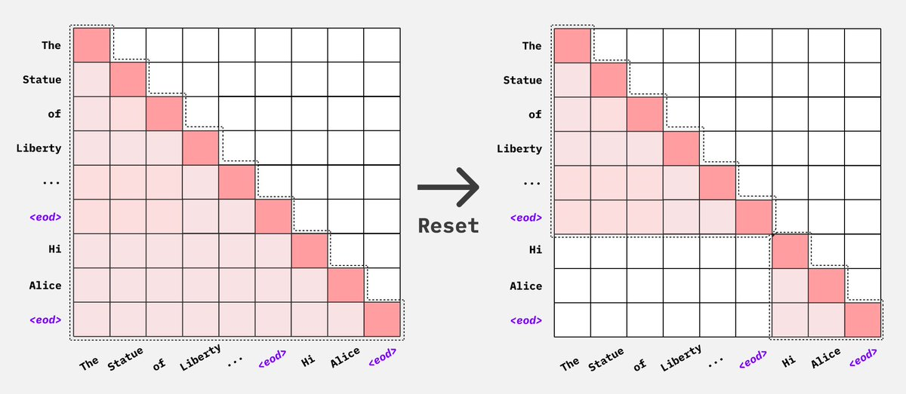

Multipack (Sample Packing)
Visualization of Multipack with Flash Attention
Because Flash Attention simply drops the attention mask, we do not need to construct a 4d attention mask. We only need to concatenate the sequences into a single batch and let flash attention know where each new sequence begins.
4k context, bsz =4, each character represents 256 tokens X represents a padding token
0 1 2 3 4 5 6 7 8 9 0 1 2 3 4 5
[[ A A A A A A A A A A A ]
B B B B B B ]
C C C C C C C ]
D D D D ]]
[[ E E E E E E E E ]
[ F F F F ]
[ G G G ]
[ H H H H ]]
[[ I I I ]
[ J J J ]
[ K K K K K]
[ L L L ]]after padding to longest input in each step
0 1 2 3 4 5 6 7 8 9 0 1 2 3 4 5
[[ A A A A A A A A A A A ]
B B B B B B X X X X X X ]
C C C C C C C X X X X ]
D D D D X X X X X X X ]]
[[ E E E E E E E E ]
[ F F F F X X X X ]
[ G G G X X X X X ]
[ H H H H X X X X ]]
[[ I I I X X ]
[ J J J X X ]
[ K K K K K ]
[ L L L X X ]]w packing ( note it’s the same effective number of tokens per step, but a true bsz of 1)
0 1 2 3 4 5 6 7 8 9 0 1 2 3 4 5
[[ A A A A A A A A A A A B B B B B
B C C C C C C C D D D D E E E E
E E E E F F F F F G G G H H H H
I I I J J J J K K K K K L L L X ]]cu_seqlens: [[ 0, 11, 17, 24, 28, 36, 41 44, 48, 51, 55, 60, 64]]
Multipack without Flash Attention
Multipack can still be achieved without Flash attention, but with lower packing efficiency as we are not able to join multiple batches into a single batch due to context length limits without flash attention. We can use either Pytorch’s Scaled Dot Product Attention implementation or native Pytorch attention implementation along with 4d attention masks to pack sequences together and avoid cross attention.

Balancing supervised tokens
A full batch does not always contain the same amount of training signal. For example, a long prompt with a short answer may occupy as much space as a short prompt with a long answer, but contribute far fewer tokens to the loss when prompt tokens are masked. We call the tokens that contribute to the loss supervised tokens, or labels.
Enable label balancing to make the amount of supervision more consistent:
sample_packing: true
balance_labels: trueAxolotl first packs samples to use the available space, then adjusts their placement to balance supervised-token counts. It keeps the retained samples and respects the packing capacity without increasing total padding. Samples stay whole, so batches will not always have exactly equal label counts.
This is most useful when answer lengths vary widely or prompts make up very different fractions of your samples. Fully supervised pretraining may benefit less because almost every input token already contributes to the loss.
Using it without packing
Label balancing also works with ordinary padded batches or with batch flattening:
sample_packing: false
batch_flattening: true
balance_labels: true
micro_batch_size: 4Each full microbatch still contains four samples. Set batch_flattening: false
to use ordinary padded batches instead. In both modes, Axolotl balances label
counts and batch sizes while keeping the number of samples per microbatch fixed.
For padded batches, it also avoids adding extra padding.
With sample packing, the number of original samples in a microbatch can vary.
With packing-aware attention and the default layout, a rank receives one packed
row with capacity micro_batch_size * sequence_len. If you enable
multipack_real_batches, it receives micro_batch_size packed rows, each with
capacity sequence_len.
Training packing uses the trainer’s effective batch size, including adjustments
from automatic batch-size reduction and single-process DataParallel. Evaluation
packing uses the effective evaluation batch size independently. This applies
with or without label balancing and to both packed layouts: one row gets a
capacity of effective batch size × sequence length, while multipack_real_batches
uses that many rows with a sequence-length capacity each.
Gradient accumulation and multiple GPUs
A microbatch is what one rank processes in one forward/backward pass. An
optimizer step combines the work of all data-parallel ranks across the
configured gradient accumulation steps. For example, four ranks with
gradient_accumulation_steps: 4 contribute 16 microbatches to each optimizer
step.
For non-streaming datasets, label balancing also makes the total supervision per optimizer step more consistent. It then adjusts samples within each step to reduce differences between its microbatches, without changing that step’s total labels or tokens. This adjustment helps when unpacked microbatches contain multiple samples, or when sample packing is enabled.
To also refine the balance across several optimizer steps, set:
balance_labels: true
label_balance_window_optim_steps: 32The default is 1, which only refines microbatches within each optimizer step.
Larger values allow sample swaps across that many complete optimizer steps,
while protecting both token-count and label-count variance at the step level.
Axolotl then refines microbatches within each step. A larger window can improve
balance, but takes more CPU time to prepare and does not guarantee an improvement.
The window counts optimizer steps, not individual ranks or microbatches. For
example, a window of 8 with four data-parallel ranks and gradient accumulation
of four covers 128 rank-local microbatches. Context- and tensor-parallel ranks do
not multiply that count. An incomplete window still receives within-step
refinement. Keep this setting unchanged when resuming a checkpoint.
Windows larger than 1 require non-streaming training; streaming preprocessing
chunks do not identify the eventual optimizer-step boundaries.
With multiple data-parallel ranks, a final ordering pass tries to make consecutive microbatches on each rank closer in size. It keeps each optimizer step’s samples and label/token totals intact, and protects the existing balance between ranks at simultaneous microsteps. Larger jobs use a bounded search rather than trying every possible rank assignment.
These adjustments do not guarantee equal memory use or runtime. In ordinary padded batches, one long sample can still determine the size of the whole batch. They also do not guarantee equal workloads across ranks or smooth size changes between consecutive microbatches on a rank. Label balancing complements the trainer’s token-weighted loss normalization; it does not replace it.
Checking the results
Compare the before and after sampler statistics to see whether balancing helps your dataset:
| Statistic | What it tells you |
|---|---|
| Mean unpadded length | How many input tokens a typical microbatch contains, excluding padding |
| Label-count standard deviation | How much supervision varies between microbatches; lower means more consistent counts |
| Optimizer-step label standard deviation | How much total supervision varies between optimizer steps |
| Padding tokens | Space spent on padding rather than input tokens |
For a fixed set of retained samples and batches, balancing should leave mean label counts unchanged. Look for reduced variation, rather than a higher mean. The statistics describe the generated schedule, not measured GPU memory or throughput. Optimizer-step statistics exclude incomplete final steps.
Compatibility and checkpoint resume
Use label balancing with causal language-model training and right padding. Labels
must be known after tokenization; custom collators that change which tokens are
supervised are not supported. Unpacked modes require a non-streaming dataset and
the standard padded or flattening collator. Keep
accelerator_config.split_batches: false, the default whole-batch sharding
behavior.
Label balancing cannot be combined with curriculum/sequential sampling, reward models, diffusion, or RL training. Unpacked modes also cannot be combined with length-grouped sampling. Balancing applies to training only; evaluation keeps its existing sampling behavior.
Streaming SFT and pretraining support balancing within each packing buffer,
controlled by streaming_multipack_buffer_size. They do not balance across
optimizer steps because those steps can span buffer boundaries. Each chunk uses
a seed derived from its tokenized contents and data_seed (falling back to
seed), so replaying the same chunk reproduces its packing.
For non-streaming checkpoint resume, keep the dataset order, seed, batching and
packing settings, data-parallel size, and gradient accumulation unchanged. Leave
ignore_data_skip: false so the trainer resumes at the correct position in the
reconstructed schedule. New checkpoints also record sampler settings and the
consumed-batch position, and reject incompatible replay settings. Older
checkpoints use the saved epoch position, with an optimizer-step boundary check.
Streaming uses its existing iterable-dataset resume behavior.
For exact balanced-sampler replay, keep the dataset’s row order, sample lengths, label counts, and sampler settings unchanged. A changed dataset fingerprint produces a warning if the sampler metadata still matches; that metadata verifies the ordering inputs, not the full text of each example. A changed data-parallel size or batching setting can prevent exact replay.
If exact replay is unavailable, ignore_data_skip: true allows training to resume
without restoring the previous data position. Samples may be repeated or skipped.
If sampler-position bookkeeping fails while saving, Axolotl still saves the model
and optimizer checkpoint, but marks exact sampler replay as unavailable.